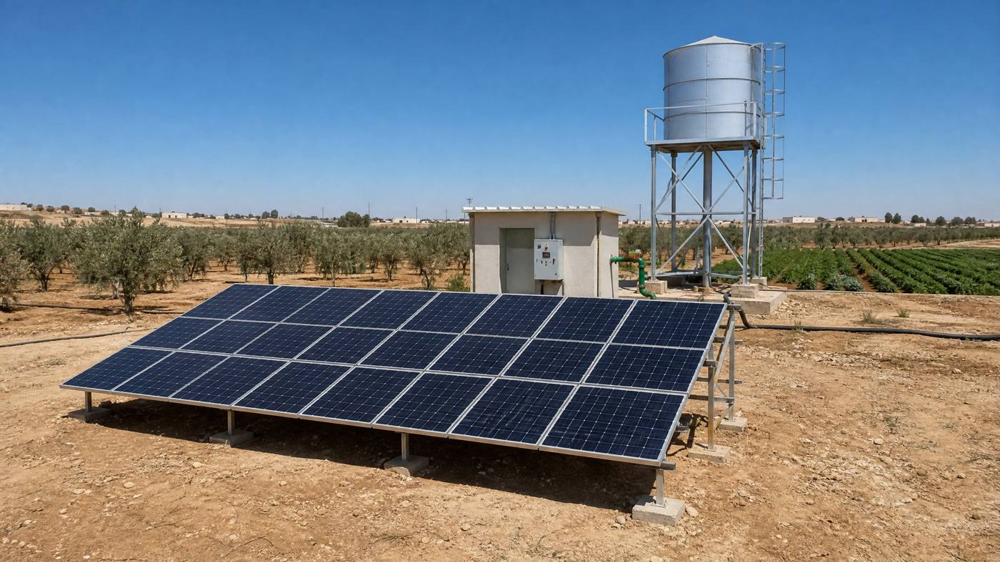

🔧 System at a glance
This is an off-grid agricultural pumping system suited to a farm well. It uses sixteen high-power panels, a variable-frequency drive (VFD) and a 5 HP submersible pump. A battery is optional and shown separately.
| Component | Specification |
|---|---|
| Solar panels | 16 × 625 W Jinko monocrystalline = 10,000 Wp (10.0 kWp) |
| Pump drive | 7.5 kW three-phase VFD (solar pump controller, MPPT) |
| Pump | 5 HP (4 kW) submersible pump, well depth ~100 m |
| Mounting | Ground-mounted steel structure, south-facing, fixed tilt (~30° in this example) |
| Cabling & protection | DC & AC cable, DC isolator, breakers, surge protection, earthing, dry-run sensor |
| Water storage | Elevated steel tank, 40–60 m³ — the tank is the storage |
Size your own array with the panel calculator and match the pump drive with the solar water pump calculator.
💧 Estimated water output
Using about 5.5 peak sun hours in northern Jordan and a realistic performance ratio of ~0.78 for losses (heat, wiring, VFD), a 10.0 kWp array gives roughly:
| Period | Approx. production |
|---|---|
| Pump flow | ~12–16 m³/hour at 100 m head |
| Per day | ~150–200 m³/day (7–9 hours of pumping) |
| Per month | ~4,500–6,000 m³/month, seasonal in summer/winter |
Output follows the sun — peak pumping midday, stopping at sunset. Check your site's sun hours in peak sun hours by location, and size your own pump with the solar water pump calculator.
💰 Cost breakdown (Jordan, approximate)
Off-grid, no battery — rough planning figures for Jordan (prices move, always get local quotes):
| Item | Approx. cost (JD) |
|---|---|
| 16 × 625 W panels | ~1,600 – 2,400 |
| 7.5 kW VFD (solar pump controller) | ~700 – 1,200 |
| 5 HP submersible pump + riser pipe | ~600 – 1,000 |
| Ground structure, cable, protection | ~500 – 800 |
| Total (off-grid pumping) | ~3,500 – 5,500 |
| Optional elevated tank (40–60 m³) | + ~500 – 1,200 |
📈 Savings & payback
In the real example above, a farm in Mafraq was paying roughly 500–800 JD per month on diesel fuel to run a generator for irrigation. The 10 kW solar pump replaced the generator completely during daylight hours — saving an estimated 400–700 JD per month in fuel, oil and generator maintenance, so a ~4,000–4,500 JD system typically pays back in about 1.5–2.5 years — after which irrigation water is essentially free for the panels' 25+ year life.
Run your own numbers with the solar water pump calculator and the ROI calculator, or design the whole system at once in the system report builder.
🛠️ Field note
We installed this system for a farm near Mafraq, Jordan: a well around 100 m deep, 16 Jinko panels on a ground structure facing south at 30°, and a 7.5 kW VFD driving a 5 HP submersible pump. In Mafraq the summer heat pushes 40°C+ — panels lose a few percent of output there, so we sized the array a bit larger than the minimum. With the old diesel generator, fuel alone was eating into the harvest; since the switch, the tank fills by mid-afternoon even in the hottest weeks, and there is no fuel bill at all.
🧰 Design your own system
- Solar panel calculator — how many panels for your usage.
- Inverter calculator — match the inverter to the array.
- Battery calculator — size backup storage.
- ROI calculator — payback in your currency.
- Full system report — design the whole system in one page.
Comparing sizes? See the guides on how many panels to run a house and grid-tied vs off-grid vs hybrid. For your country's tariffs and payback, visit Solar by Country.
❓ Frequently asked questions
How big of a solar array do you need for a well pump?
A good rule of thumb is pump wattage × 1.5–2 of solar array. A 4 kW (5 HP) submersible pump needs roughly 8–10 kWp — this example uses 10.0 kWp (16 × 625 W) for reliable pumping at a 100 m well depth.
How much water does a 10kW solar pump produce per day?
Around 150–200 m³ per day from a 100 m well (7–9 hours of pumping), enough for 3–5 hectares of irrigated crops depending on the crop and season.
How much does a 10kW solar well pump system cost?
Roughly 3,500–5,500 JD off-grid in Jordan including panels, VFD, pump and structure. No battery is needed — the water tank stores the "energy".
Is a solar well pump worth it compared to diesel?
For daily irrigation, yes — diesel typically costs 400–700 JD per month including fuel and maintenance, so the solar system usually pays back in 1.5–2.5 years and then runs free for 25+ years.
Note: all figures are approximate and for planning only. Production depends on your sun hours, shading and roof orientation; prices and tariffs vary and change over time. Always confirm with local installers and your electricity provider.